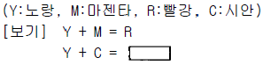

사진기능사 (2002-04-07 기출문제)
1과목: 사진일반
1. 헬리오그래피(Heriography)에 대한 설명 중 틀린 것은?
- 니에프스가 발명한 사진술이다.
- 카메라 옵스큐라로 촬영했다.
- 감광성 아스팔트를 동판에 도포했다.
- 감광도가 빨라 5분 정도로 촬영했다.
(정답률: 79%)

2. 녹색잎이 눈과 같은 흰색으로 표현되며 태양 직사광 상태의 풍경 사진에서 청색 하늘을 검게 나타내기 위해 사용되는 필름은?
- 흑백복사용 필름
- X레이 필름
- 적외선 필름
- 리스 필름
(정답률: 67%)
3. 일반 필름에 감광이 잘 되지 않는 것은?
- 자외선
- X선
- 가시광선
- 적외선
(정답률: 46%)
4. 두개 이상의 파가 한점에서 만날 때 성분파의 위상관계에 의해 합성파의 진폭이 변화함으로써 이 부분의 빛이 밝게 또는 어둡게 되는 현상은?
- 반사
- 회절
- 굴절
- 간섭
(정답률: 74%)
5. 식품과 어린이용품을 잘 나타낼 수 있는 색상은?
- 황색계열
- 은색계열
- 금색계열
- 백색계열
(정답률: 84%)
6. 육안으로 가장 강하게 감지되는 색 중 550㎚의 색은?
- 녹색
- 황록색
- 흰색
- 보라색
(정답률: 30%)
7. Red광과 Blue광을 합한 색은?
- 노랑(Yellow)
- 시안(Cyan)
- 마젠타(Magenta)
- 빨강(Red)
(정답률: 86%)
8. 보기와 같이 컬러사진에서 두색이 겹치면 또 다른색이 된다. 네모에 들어갈 색은?

- 흑색
- 녹색
- 청색
- 백색
(정답률: 83%)
9. 가색법의 3원색에 속하는 Blue의 보색이 되는 것은?
- Yellow
- Magenta
- Red
- Green
(정답률: 70%)
10. 컬러 필름은 감광막이 세가지 층으로 구성되어 있는데 관계가 없는 것은?
- 황감층
- 청감층
- 녹감층
- 적감층
(정답률: 88%)
11. 사진 폐액 처리시 옳지 못한 것은?
- 사진 폐액 중에서 유해 성분을 제거한다.
- 수세조의 처리액 유출을 감소시킨다.
- 사용이 끝난 폐액을 재생하고 재이용한다.
- 현상액과 같은 알칼리성 폐액은 산성 폐액으로 만들어 처리한다.
(정답률: 62%)
12. 광학계의 일부에 반사경을 병용한 카메라로 일안과 이안 카메라로 분류되는 카메라는?
- Press 카메라
- Miniature 카메라
- Box 카메라
- Reflex 카메라
(정답률: 75%)
13. 컬러 네거티브에서 Orange mask를 사용하는 이유는?
- 헐레이션을 방지하기 위해서
- 이레디에이션을 방지하기 위해서
- 색의 부정 흡수를 방지하기 위해서
- 유제를 보호하기 위해서
(정답률: 62%)
14. 컬러 네거티브 필름에서 만들어진 인화의 색채 균형을 수정하는 방법은?
- 수정하려는 색과 반대되는 색으로 확대기의 필터를 바꿔준다.
- 수정하고자 하는 색과 같은 색으로 확대기의 필터를 바꿔준다.
- 마젠타와 시안필터만 바꿔준다.
- 수정하고자 하는 뷰잉 필터의 색에 수정하고자 하는 색을 첨가한다.
(정답률: 45%)
15. 렌즈의 중심부로 입사된 빛과 주변으로 입사된 빛이 한곳에 모이지 않는 현상 때문에 생기는 수차는?
- 색수차
- 구면수차
- 만곡수차
- 코마수차
(정답률: 56%)
16. 컬러리버셜 필름의 특징을 옳게 설명한 것은?
- 노출관용도가 넓어 노출결정에 융통성이 있다.
- 일반 네거티브 필름에 비해 현상처리 과정이 간단 하여 편리하다.
- 발색현상이 진행됨에 따라 자동적인 색 보정이 가능하다.
- 반전현상에 의해 피사체의 색이 그대로 재현된다.
(정답률: 34%)
17. 산을 중화시킬 수 있는 물질로 붉은 리트머스 시험지를 푸르게 하는 것에 해당되는 것은?
- 산성
- 중성
- 알칼리성
- 명반
(정답률: 72%)
18. 필름의 퍼포레이션과 짝이 되는 것은?
- 패트로네
- 스프로케트
- 레버
- 크랭크
(정답률: 25%)
19. MQ 현상액의 주약은?
- 페니돈, 하이드로퀴논 현상액
- 페니돈, 메톨 현상액
- 메톨, 하이드로퀴논 현상액
- 파이로 현상액
(정답률: 76%)
20. 알칼리성이 아주 강한 현상액을 사용했을 때 일어나는 현상과 관계없는 것은?
- 필름 유제의 젤라틴막이 연해진다.
- 필름 유제의 젤라틴막이 강해진다.
- 입자가 커진다.
- fog가 발생한다.
(정답률: 48%)
2과목: 사진재료 및 현상
21. 흑백필름의 현상 주약은?
- 티오황산나트륨 결정(Na2S2O3· 5H2O)
- 수산화나트륨(NaOH)
- 하이드로퀴논(1,4-dihydroxyl benzene)
- 하이포(NaBO2· 2H2O)
(정답률: 69%)
22. 일반적으로 감력에 많이 사용되는 약품은?
- 적혈염
- 중크롬산칼륨
- 브롬화칼륨
- 승홍
(정답률: 52%)
23. 정상적인 감광도로서는 빛이 약하여 촬영할 수 없을 때 정상적인 네거티브와 유사한 네거티브의 농도를 얻을 수 있는 현상은?
- 가감현상
- 적정현상
- 증감현상
- 보력현상
(정답률: 60%)
24. 소형 탱크 현상의 장점에 속하는 것은?
- 관찰현상이 가능하다.
- 교반 얼룩이 전혀 생기지 않는다.
- 종류가 서로 다른 필름을 동시에 현상할 수 있다.
- 유제막에 흠이 생길 우려가 거의 없다.
(정답률: 28%)
25. 덱톨(Dektol)의 사용은?
- 필름 현상용
- 도색 현상용
- 정지액
- 인화 현상용
(정답률: 50%)
26. 필름을 현상할 때 순서가 맞는 것은?
- 현상 - 수세 - 중간정지 - 정착
- 수세 - 중간정지 - 현상 - 정착
- 현상 - 중간정지 - 정착 - 수세
- 정착 - 중간정지 - 현상 - 수세
(정답률: 78%)
27. 주광용(Daylight) 컬러필름으로 일반적인 형광등 아래에서 촬영할 경우 많아지는 색은?
- 보라색
- 녹색
- 적색
- 황색
(정답률: 45%)
28. 필름의 유제층을 고감도 유제층과 저감도 유제층으로 이중 도포하는 이유 중 가장 적절한 것은?
- 해상력을 높이기 위해
- 입상성을 좋게 하기 위해
- 관용도를 좁히기 위해
- 관용도를 넓히기 위해
(정답률: 63%)
29. 사진 시약을 수분 함량에 따라 결정체, 단일수화물, 무수화물, 건조물로 분류할 때 다음 설명 중 틀린 것은?
- 결정체는 건조물과 비슷하게 수분이 거의 없는 상태이다.
- 단일수화물은 약간의 수분을 포함한다.
- 무수화물은 수분을 거의 포함하지 않는다.
- 건조물은 수분이 제거된 것이다.
(정답률: 41%)
30. 흑백필름이나 인화지 현상시 일반적으로 권장하는 약물의 온도는?
- 14± 2℃
- 20± 2℃
- 24± 2℃
- 28± 2℃
(정답률: 52%)
31. 뷰 카메라로 클로즈 업(Close up)촬영시 주름막을 정상보다 늘렸을 때의 노출은?
- 정상과 같다.
- 과다된다.
- 부족된다.
- 상관 없다.
(정답률: 58%)
32. 출장촬영시 휴대하기에 편리하면서도 카메라 무브먼트를 구사할 수 있는 것은?
- 일안반사식 카메라
- 필드 카메라
- 이안반사식 카메라
- 파노라마 카메라
(정답률: 44%)
33. 실내 농구장에서 골인하는 장면을 클로즈업(Close-up)으로 찍을 때 가장 필요한 장비는?
- 망원 렌즈와 35㎜ 거리계 연동식 카메라
- 광각 렌즈와 35㎜ 거리계 연동식 카메라
- 망원렌즈와 35㎜ 일안 반사식 카메라
- 광각렌즈와 35㎜ 일안 반사식 카메라
(정답률: 72%)
34. 카메라(camera) 화면의 대각선의 길이와 비슷한 초점 거리를 가진 렌즈(lens)는?
- 망원렌즈(Telephoto lens)
- 표준렌즈(Standard lens)
- 광각렌즈(Wide angle lens)
- 줌렌즈(Zoom lens)
(정답률: 79%)
35. 렌즈의 밝기를 표시하는데는 무엇을 기준으로 삼는가?
- 렌즈의 유효구경과 초점거리와의 비
- 렌즈의 전면측(前面側)의 직경
- 렌즈의 경동(鏡胴)의 길이와 렌즈 구경과의 비
- 렌즈의 유효구경과 실구경과의 비
(정답률: 74%)
36. 다음 중 ND필터의 용도로 맞는 것은?
- 색온도변환 필터
- 광량을 감소시킬 때 사용하는 필터
- 콘트라스트를 강조하기 위해 사용하는 필터
- 초점심도를 깊게 할 때 사용하는 필터
(정답률: 83%)
37. 싱크로 중에서 X접점의 스위치가 연결되는 시점은?
- 셔터를 누르는 순간
- 셔터가 열리기 직전
- 셔터가 열리기 시작할 때
- 셔터가 완전히 열렸을 때
(정답률: 62%)
38. 포컬플레인셔터(Focal plane shutter)의 특징이라고 볼 수 없는 것은?
- 플래시 싱크로 동작에 제한을 받지 않음
- 렌즈교환이 편리함
- 셔터속도를 고속으로 설계
- 동체 촬영시 변형이 생길 수도 있음
(정답률: 48%)
39. 카메라 셔터에 내장되어 있는 싱크로장치의 전기접점 중 포컬플레인 셔터 전용으로 사용되는 것은?
- F접점
- M접점
- X접점
- FP접점
(정답률: 68%)
40. 셔터 속도 1/125초, 조리개 f/11과 같은 노출량으로 할려면 1/60초 일 때 F 번호는?(단, 소형 카메라 사용)
- 5.6
- 8
- 11
- 16
(정답률: 40%)
3과목: 사진기계 및 촬영
41. 확대기 구조의 명칭이 아닌 것은?
- 램프하우스
- 캐리어
- 초점노브
- 안전등
(정답률: 73%)
42. 텅스텐(Tungsten) 타입의 필름으로 촬영할 때 알맞은 색온도는?
- 2500 K
- 3200∼3400 K
- 4000∼4500 K
- 5800 K
(정답률: 80%)
43. 카메라 몸통(Body) 속에 있는 필름 압착판의 주된 역할은?
- 필름의 진행을 도와준다.
- 광선을 차단한다.
- 필름의 평탄성을 유지시킨다.
- 촬영매수 계산장치의 일부이다.
(정답률: 72%)
44. 파인더(finder)를 틀리게 설명한 것은?
- 파인더는 촬영되는 범위와 위치를 보고 조절하는 장치이다.
- 반사식 파인더의 종류에는 일안 반사식과 이안 반사식이 있다.
- 눈금 초점 조절식 파인더 카메라는 보통 110형을 사용한다.
- 고정 초점식 파인더는 촬영거리에 따라 초점을 맞출 필요가 없다.
(정답률: 45%)
45. 피사체의 위치에서 피사체를 비추고 있는 광선의 밝기를 측정하여 노출치를 정할 수 있는 노출계는?
- 입사식 노출계
- 반사식 노출계
- SPD 노출계
- GPD 노출계
(정답률: 84%)
46. 주광이 피사체의 전부분을 조명하는 보조광보다 2배 밝으면 이 때 조명비율은?
- 2:1
- 3:1
- 4:1
- 6:1
(정답률: 38%)
47. 주광(Daylight)에 가장 가까운 조명기구는?
- 백열전구
- 플러드조명(3400K)
- 형광등
- 스트로보
(정답률: 69%)
48. 컬러 촬영시 RGB의 피사체 색깔이 필름에 나타나는 색을 순서대로 나타낸 것은?(단, R:Red, G:Green, B:Blue, Y:Yellow, M:Magenta, C:Cyan)
- YMC
- MYC
- CMY
- MCY
(정답률: 48%)
49. 피사계 심도에 대한 설명 중 옳지 않은 것은?
- 피사계 심도는 초점이 맞는 범위를 지칭한다.
- 렌즈의 초점거리가 길수록 심도는 얕아진다.
- 조리개를 개방할수록 심도는 깊어진다.
- 심도는 렌즈의 초점거리, 카메라와 피사체와의 거리, 조리개의 f값에 따라서 결정된다.
(정답률: 72%)
50. TTL 측광에서 f/1.4로 100% 투과율일 때 f/2.8에서의 투과율은?
- 20%
- 25%
- 30%
- 50%
(정답률: 49%)
51. 사진 감광재료의 보관방법으로 적합하지 않은 것은?
- 상온에서 보관한다.
- 횡으로 쌓기보다는 종으로 세워서 보관한다.
- 습도가 낮은 곳에서 보관한다.
- 환기가 잘 되는 곳에 보관한다.
(정답률: 53%)
52. 렌즈의 초점거리를 달리함으로써 원하는 상을 조절하여 표현할 수 있다. 다음중 단초점 렌즈를 사용해서는 안되는 경우는?
- 넓은 화각을 원할 때
- 원근감을 과장시킬 때
- 짧은 피사계 심도를 원할 때
- 가까운 물체를 크게 보이고 싶을 때
(정답률: 39%)
53. 확대 인화 기법과 가장 거리가 먼 것은?
- 트리밍
- 몽타즈
- 디포메이션
- 밀착인화
(정답률: 40%)
54. 색온도 변환용 필터 중에서 색온도를 높이기 위한 필터의 색은?
- 청색 계열
- 앰버 계열
- 적색 계열
- 황색 계열
(정답률: 59%)
55. 노출을 정확히 측정하기 위한 방법이 아닌 것은?
- 노출계로 어두운 곳과 밝은 곳의 평균 노출을 읽는다
- 피사체에 희거나 밝은 부분이 현저하게 많다면 노출계가 지시한 노출보다 조리개를 한두단계 줄여준다.
- 어두운 부분에 맞춰 노출을 결정하고 이를 보완한다.
- 노출이 의심스러울 때 확실한 보장을 받기 위해 브라케팅(bracketing)을 한다.
(정답률: 37%)
56. 이안 반사식 카메라(Twin Lens Reflex Camera)나 거리계 연동식 카메라(Range finder Camera)에서 발생하는 시차(Parallax)의 원인은?
- 파인더와 셔터의 위치가 불일치할 때 발생
- 파인더의 구도와 화면상의 구도가 일치할 때 발생
- 원거리 촬영시 발생
- 뷰파인더와 렌즈의 위치가 불일치할 때 발생
(정답률: 69%)
57. 노출계에 사용되는 수광소자가 아닌 것은?
- SPD
- Cds
- GPD
- LED
(정답률: 83%)
58. 상하주행식 포컬플레인 셔터를 사용하는 카메라의 스트로보 동조 셔터 속도로 가장 사용할 수 없는 것은?
- 1/60
- 1/125
- 1/250
- 1/500
(정답률: 70%)
59. 스트로보 촬영시 피사체에 대해 고른 조명을 하고자 할때 천정이나 벽에 스트로보를 향하게 하여 촬영하는 방법은?
- 오픈 플래시(Open flash)
- 바운스 라이트(Bounce light)
- 플레어 라이트(Flare light)
- 더블 라이트(Double light)
(정답률: 88%)
60. 가이드넘버(GN)가 60인 Flash 조리개를 f/8에 놓았을 때 알맞게 노출 될 수 있는 피사체의 거리는?
- 1m-2m
- 3m-4m
- 5m-6m
- 7m-8m
(정답률: 70%)